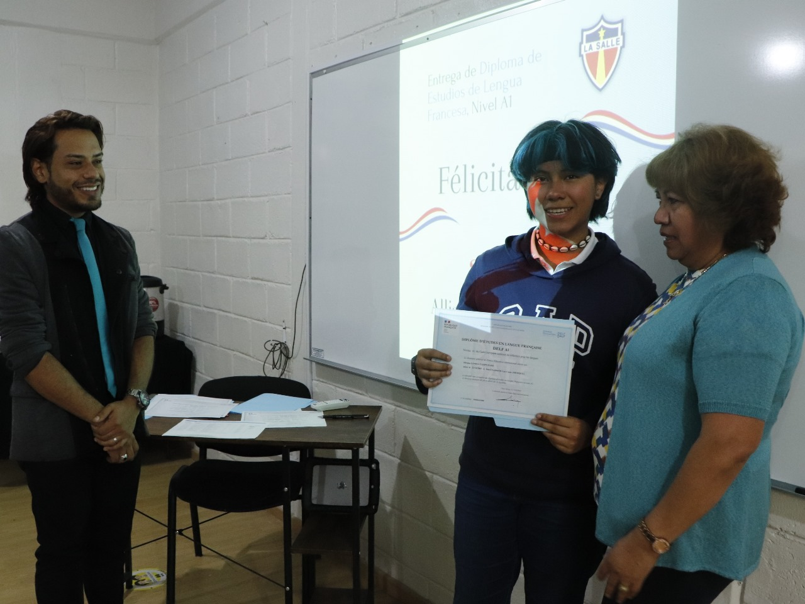
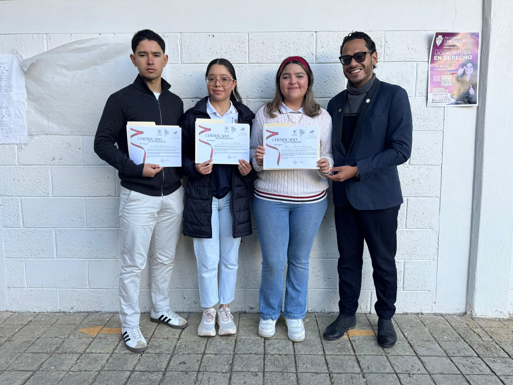

Écosystème Numérique
DELF-La Salle 2026
Document stratégique présenté à la Coordination Nationale et à la Gestion Centrale. Analyse exhaustive de la plateforme transactionnelle conçue par l'Alliance Française de San Cristóbal de Las Casas.
Mise en Conformité Immédiate
Suite à la réception du Guide national de communication DELF-DALF transmis par Mme Marielle Cuisinier, la Direction Générale de l'AFSC a personnellement pris en charge l'intégralité du développement et supervisé la transition vers cet écosystème propriétaire et sécurisé.
- Nomenclature obsolète supprimée. Toute mention au « DELF Pro » est définitivement radiée du code source et des supports.
- Logotypes actualisés. Intégration stricte des chartes graphiques 2026 dans les en-têtes officiels.
- Autonomie technique. Le développement garantit une réactivité éditoriale immédiate, sans dépendance externe.

Tolérance Zéro : Fraude & Électronique
Pour préserver l'intégrité et la valeur diplomatique des certifications, le portail consacre une section d'avertissement stricte concernant la fraude.
Règle d'exclusion immédiate
La possession (même éteinte) de téléphones portables ou de montres connectées durant les épreuves entraîne l'exclusion immédiate du centre, l'annulation du diplôme et un signalement à la Délégation Générale.

Cas d'étude : Colegio La Salle
Le partenariat avec des institutions prestigieuses comme le Colegio La Salle requiert une interface dédiée. Ce portail n'est pas générique : il est profondément intégré à l'écosystème scolaire.
Valeur ajoutée institutionnelle. En créant des espaces numériques dédiés à nos grandes conventions, l'AFSC se positionne non comme un simple « vendeur d'examens », mais comme un véritable partenaire logistique et technologique pour l'éducation bilingue dans le Chiapas.

Identité Visuelle & Preuves Opérationnelles
Deux registres complémentaires : à gauche, la charte graphique institutionnelle 2026 dans ses déclinaisons officielles ; à droite, les preuves opérationnelles de la collaboration AFSC × Colegio La Salle (sessions de remise de diplômes, validation des résultats).
 Charte — bandeau horizontal
Charte — bandeau horizontal
 Charte — variante landscape
Charte — variante landscape
 Charte — déclinaison épurée
Charte — déclinaison épurée

Remise diplôme A1 — La Salle
Session Juin 2025 — promotion Cérémonie officielle 2025 — AFSC
Cérémonie officielle 2025 — AFSC
L'Excellence au Service du Réseau
La conception de cet écosystème prouve que l'Alliance Française de San Cristóbal de Las Casas ne se contente pas d'appliquer les directives de la Coordination Nationale : elle les sublime grâce à la technologie. En garantissant une conformité totale au Guide National 2026, nous assurons la pérennité, la sécurité et le prestige de nos certifications dans l'État du Chiapas.
direccionsancristobal@alianzafr.edu.mx — Édition Juin 2026